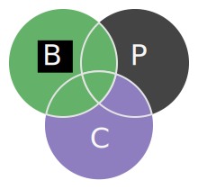
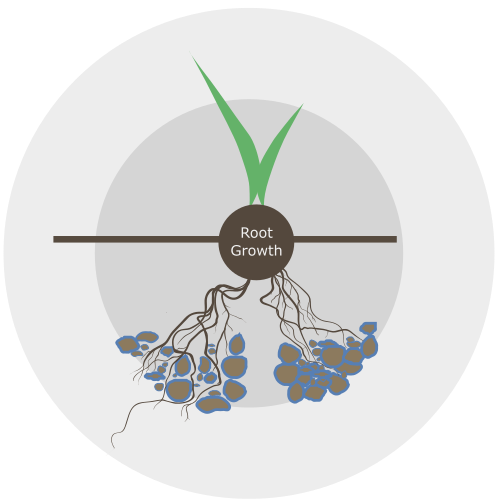

The health of soil can analyzed using the
biological, physical, and
chemical properties. Nutrient cycling and soil organic matter (SOM) are central concepts.
Soil organic matter (SOM) is a diverse mixture of living, decaying, and stable organic materials in different biological, chemical, and physical states.
H2O in SOM
- Litre per % OM
CEC of SOM
- Meq
20% Active
80% Stable
C in SOM
- MT/a Carbon
11MT/a per 1%
A sustained cycling of dead organic residues and living organisms creates a storage and slow release mechanism for carbon and plant nutrients, complementing the rapid availability of fertilizers.
- Fertilizer availability
- OM Mineralization release
The Carbon:Nitrogen ratio affects whether biological activity is a sink (storage) or a source (release) of plant available nitrogen. Managing organic matter can lead to better control of mineralization and immobilization.
- C:N Ratio
- Mineralization
- Immobilization
Manure & compost add organic carbon and nutrients to the soil, fueling both plant growth and the microbial production of long term soil OM.
- Organic Carbon
- Organic Nitrogen

Soil porosity effects air, water, and nutrient access by roots and is easily disrupted by heavy traffic on moist soil, tillage, and rain events.
Summary
A continuous supply of fresh residues and living roots is necessary to provide active OM for foodweb metabolism & build humus. C02 emission limits the amount of biomass retained as stable OM or humus.
- Microbial biomass
- Active Carbon
- Nitrogen Release
- Stable Carbon
Our work
Soil health sampling was carried out by KNWSA staff in cooperation with PEIDAF and local farmers and used in the development of a ratings scale for multiple soil health parameters.
Soil Stability
Active Carbon
Split trial data was collected to assess changes in soil health and/or crop yield associated with residue tillage as a conservation practice for reducing erosion.
- Residue tillage (Revenue $000/a)
- Mouldboard plough Revenue $000/a)
Alam, M. Z, Lynch, D.H, Sharifi, M., Burton, D. L. & Hammermeister, A. M. (2016): The effect of green manure and organic amendments on potato yield, nitrogen uptake and soil mineral nitrogen, Biological Agriculture & Horticulture.
This research examined organic nutrient sources and crop sequences in an organic potato rotation. There were no significant yield increases associated with any one rotation and it was concluded that rotational effects on yield would have to be studied over longer periods of time. Municipal solid food waste and paper mill biosolid amendments did significantly increase yields.
This research was conducted on Prince Edward Island in 1999 and focused specifically on potato production. It found that tillage frequency and rotation length affected soil quality, especially for labile organic Carbon and Nitrogen fractions. Aggregate stability followed a similar pattern but was less pronounced than soil organic matter (SOM) Carbon and Nitrogen fractions. Under longer rotations with 30-40% potato frequency (and associated intensive tillage), soil quality and SOM content was higher.
This research observed that even in cropping systems that returned little biomass back to the soil that reduced tillage can maintain or increase the labile, or active, fractions of organic matter.
Burton, Zebarth, Styles (2016, March). Developing a soil nitrogen test for potato production in Prince Edward Island. Data presented at the PEI Soil and Crop Improvement Association Annual Conference, Summerside, PE.
Data collected on Prince Edward Island show substantial variation in soil nitrogen supply across regions and and farms. Potentially mineralizable N ranged from approximately 95kgha-200kg/ha and actual, mineralized N ranged from 30kg/ha - 110kg/ha.
This fact sheet explains Cation Exchange Capacity (CEC) in detail and the gains in CEC associated with increasing organic matter.
This fact sheet explains the composition of organic matter and the various chemical, physical, and biological benefits it provides.
This is the free online version of the Cornell Soil Health manual. This manual provides explanations of key soil health parameters and how they are measured using Cornell Soil Health testing.
Culman, S. W., Snapp, S. S., Freeman, M. A., Schipanski, M. E., Beniston, J., Lal, R., ... & Lee, J. (2012). Permanganate oxidizable carbon reflects a processed soil fraction that is sensitive to management. Soil Science Society of America Journal, 76(2), 494-504.
This paper finds that permanganate oxidizable carbon (POXC), or active carbon, is a measurable fraction of organic matter that responds to management. This is the metric for active carbon used in the Cornell Soil Health test.
This research presents Eastern Canadian data on soil supplied nitrogen and confirms that soil N supply can be predicted by soil properties. The average soil N supply at the 0-15cm depth was 70kg/ha and varied over a similar range to what Burton, Styles, and Zebarth have found of Prince Edward Island.
This articles examines the relationship between available water capacity (AWC) of soil and soil organic matter (SOM). Generally speaking, the water holding capacity of soil is measured as the difference between field capacity (max water before saturation) and permanent wilting point (PWP), the % moisture at which plant roots can no longer extract moisture. The paper acknowledges that increased SOM increases soil aggregate formation, aggregate stability, and porosity, resulting in increased water holding. Conversely, when SOM decreases, water holding capacity decreases. Since water capacity varies with soil texture in addition to SOM, there is no singular number reported.
This research defines conservation management as "some combination of reduced tillage, increased crop diversity more perennial crops, increased crop residue return, increased soil fertility and/or increased application
of organic amendments." It presents data that demonstrates differences in soil quality associated with conservation management.
This paper reviews literature on tillage induced changes in physical soil properties such as bulk density and porosity. Comparisons between conventional and no-till are reported on.
This study compared soil with long term manure use (28 yrs) to soil that had no history of manure. Long term manure application significantly increased potentially mineralizable nitrogen (PMN) and preseeding N03-N levels. Water stable macroaggregates were also significantly higher with than without manure. It is concluded mineral NPK alone is not sufficient to maintain or increase soil nutrient status or soil quality.
This research finds that various pools of organic matter—hot water extractable Carbon (HWC) and extractable organic Carbon (EOC)—explain soil mineralizable Nitrogen when combined in a multivariate analysis, indicating that increases in total OM and EOM are associated with increases in mineralizable N.
Sharifi, M., Zebarth, B. J., Burton, D. L., Grant, C. A., & Porter, G. A. (2008). Organic amendment history and crop rotation effects on soil nitrogen mineralization potential and soil nitrogen supply in a potato cropping system. Agronomy Journal, 100(6), 1562-1572.
This research finds that organic amendments can increase the soil N supply potential by up to 35%. Management induced changes were detected by several indicators of soil N supply.
Schjonning, P., Munkholm, L. J., Elmholt, S and Olesen, E. 2007. Organic matter and soil tilth in arable farming: Management makes a difference within 5-6 years. Agriculture, Ecosystems & Environment 122(2):157-172.
This research concludes that as little as 5-6 years of differentiated soil management significantly affect soil organic carbon fractions, soil structure, and the growth of fungal hyphae. Macroporosity was significantly higher in a cereal rotation that included a grass/clover green manure than it was for a cereal dominated rotation with no manure and a cereal dominated rotation with manure. Both cereal + grass and cereal + manure rotations resisted compaction better.
Soon, Y. K. and Clayton, G. W. 2002. Eight years of crop rotation and tillage effects on crop production and N fertilizer use. Canadian Journal of Soil Science. 82: 165172.
Western Canadian study on a sandy loam soil. Looked at multiple types of rotation over 2 4 year rotation cycles, finding that it wasn’t until the second rotation cycle that the effects of a no-till (NT) system resulted in a decrease in fertilizer requirement and 22% higher wheat yields. This was related to reduced tillage and diversified rotational crops.
This paper reports that particulate organic matter (POMN) may be a good predictors of Soil N. Because research was conducted on Western Canadian soils, mineral N was also found to explain variation in Soil N but this would not apply in Eastern Canada. The study reports values for potentially mineralizable nitrogen (PMN) ranging from 40-140 mg/Kg which highlights the opportunity for increased nutrient use efficiency in developing reliable predictors of soil nitrogen producing potential.
This research focuses on the labile (active) fractions of soil organic matter, finding that particulate organic matter (POM) and hot water extractable organic matter (Hot-WEOM), a smaller labile pool, are good early season indicators of soil N supply in both sandy loam and silty clay soils of the St. Lawrence River lowlands in Quebec.
This paper provides some nitrogen response curves for potato and discusses the challenge of maximizing nitrogen use efficiency (NUE). It also discusses light interception and maximum yield as considerations in matching nitrogen fertilizer to crop uptake.
Zebarth, B. J., Leclerc, Y., & Moreau, G. (2004). Rate and timing of nitrogen fertilization of Russet Burbank potato: Nitrogen use efficiency. Canadian Journal of Plant Science, 84(3), 845-854.
This research reports on the nitrogen use efficiency of Russet Burbank potatoes. At moderate levels of inorganic fertilization (120-160 kg/ha), nitrogen use efficiency was 50%. Nitrogen use efficiency decreased with increasing rates of nitrogen fertilizer. As whole plant dry matter increased, harvest index (the ratio of tuber dry matter to plant dry matter) decreased.